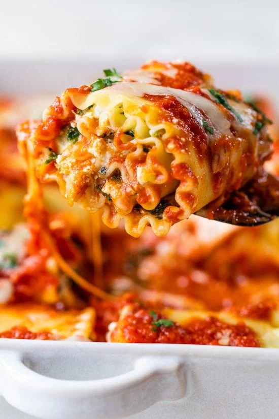

Spinach Artichoke Lasagna Roll-up
Prep Time: 15 mins | Cook Time: 45 mins | Total Time: 1 hr 15 mins

Description
Go meatless with these tasty Spinach Artichoke Lasagna Roll-ups! They’re much faster to make and bake than a traditional lasagna.
Ingredients
- 2 cups homemade marinara sauce ((or jarred) plus more for serving)
- 8 uncooked lasagna noodles (wheat or gluten-free)
- 5 oz package frozen chopped spinach (thawed and squeezed well (1/2 cup squeezed))
- 5 ounces canned artichoke hearts (drained and chopped fine)
- 15 oz part skim ricotta cheese (I like Polly-o)
- 1/2 cup grated Parmesan cheese
- 1 clove minced garlic
- 1 large egg
- kosher salt and fresh pepper
- 1/2 cup part-skim mozzarella cheese (shredded)
- optional parsley for garnish
Instructions
- Preheat oven to 350°F. Ladle about 1 cup sauce on the bottom of a 9 x 12 baking dish.
- Cook noodles according to package directions, then drain.
- Meanwhile, combine spinach, artichokes, ricotta, Parmesan, egg, garlic, 1/2 teaspoon salt and black pepper in a medium bowl and mix.
- Lay out a lasagna noodles on a work surface. Take 1/3 cup of spinach artichoke filling and spread evenly over noodle. Roll carefully and place seam side down onto the baking dish. Repeat with remaining noodles.
- Ladle remaining sauce over the noodles and top each one with 1 tbsp mozzarella cheese.
- Put foil over baking dish and bake for 40 minutes, or until cheese melts and the rolls are heated through. Makes 8 rolls.
- To serve, ladle a little marinara sauce on the plate and top with lasagna roll.